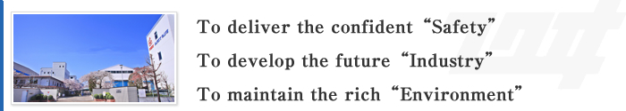

Since the establishment in 1936, we have devoted ourselves to meet the wide varieties of market needs, and have supported the worlds' manufacturing industries as one of the top manufacturer of Safety Valves.
As the company engaging in the "Safety", we contribute our utmost efforts to the manufacturing without any compromise. Continual innovation and reliability are the strength of FUKUI.